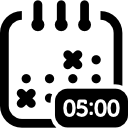
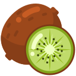

Le système d'exploitation du commerçant marocain.
Kiwi remplace l'acquéreur classique, la caisse, et l'outil de pilotage par un seul produit. Conçu à Tanger, vendu en français, en darija, en arabe. Les commerçants reconnaissent leur réalité avant de reconnaître leur fournisseur.
-
Rigueur Stripe
Chaque chiffre vérifié à la source. Aucun « en cours », aucun tiret cadratin, aucune copie hedgée. Si on ne peut pas prouver, on ne dit pas.
-
Spécificité Tanger
Les références marocaines doivent être maghrébines, pas pan-arabes. Tifinagh ⵣ avant l'arabesque. Atay avant le café. Caftan avant l'abaya.
-
Discipline mint ≤ 5 %
Le mint est l'accent de la marque. Jamais plus de 5 % d'un viewport. Plus on l'utilise, moins il signifie. Un seul mint par moment.
-
Poids 500 maximum
Geist 500, jamais 600 ni 700. La typographie respire grâce à l'espacement et au letter-spacing négatif, pas à la graisse.
-
Bilingue par construction
FR + darija pour les commerçants, EN pour les investisseurs, AR pour les moments éditoriaux. Reem Kufi pour l'arabe, jamais un Arial fallback.
-
Test à deux lecteurs
Un café-owner à Casa et un GP chez a16z doivent tous deux faire confiance. Si un seul des deux passe, on retravaille.
Cinq couleurs. Aucune négociation.
Une palette restreinte est un langage clair. Atlas est le portail, Mint est l'accent, Riad est la nuit, Paper est le silence, Ink est le mot.
Le mint est précieux parce qu'on le réserve. Mesurez-le sur chaque écran. S'il dépasse 5 % du viewport, retirez-le quelque part avant de l'ajouter ailleurs.
Quatre familles. Un langage unifié.
Geist pour le corps, JetBrains Mono pour les nombres, Instrument Serif italic pour l'éditorial, Reem Kufi pour l'arabe. Aucune autre famille n'est tolérée.
112px / 1.02
tracking -0.035em
72px / 1.04
tracking -0.030em
48px / 1.08
tracking -0.025em
22px / 1.20
tracking -0.015em
19px / 1.45
tracking -0.011em
16px / 1.55
tracking -0.014em
14px
tnum + lnum
26px
color: atlas
26px
direction RTL
Geist 500 est le plafond. Jamais 600, jamais 700. La hiérarchie est portée par l'échelle (clamp), le letter-spacing négatif et l'espacement vertical, pas par la graisse de la fonte.
Une grille de 8 px. Pas d'exception.
Toutes les valeurs d'espacement (padding, margin, gap) viennent du jeu de tokens. Chaque écart entre éléments doit pouvoir s'écrire avec un --s-N.
Il n'y a pas de --s-7, --s-9, --s-11, --s-13, --s-14, --s-15. Si vous en avez besoin, vous avez choisi le mauvais voisin. Re-mesurez : presque toujours --s-6 ou --s-8 fonctionne.
Six courbes. Quatre durées. Un contrat reduced-motion.
Le mouvement est une typographie temporelle. Chaque animation a une raison. Les utilisateurs avec prefers-reduced-motion: reduce voient toujours l'état final, jamais une animation tronquée.
Démarrage rapide, atterrissage long
Poids naturel d'un objet réel
Pour les pop-in, entrées d'icônes
Compteurs, jauges, livePulse
--d-instant: 120ms · --d-quick: 220ms · --d-base: 420ms · --d-slow: 720ms. Hors animations cinématiques (1200ms maximum), aucune animation ne doit dépasser 720ms.
Le vocabulaire d'interface.
Boutons, pilules, séparateurs néon, cartes orbitantes. Chaque composant existe parce qu'un moment de la page le demande, pas l'inverse.
51 icônes. Toutes marocaines.
Chaque icône est un PNG noir recoloré via CSS filter en atlas, mint ou ink selon le contexte. La référence est marocaine spécifique : kasbah, riad, kaftan, atay, halal — jamais des clichés pan-arabes.

clock
kiwi-fruitAucune icône colorée par défaut. Toutes les icônes sont en noir et recolorées au point d'utilisation via filter. Atlas pour le rest, mint pour les états actifs ou « live », ink pour fond mint.
Direct. Vérifié. Sans hedge.
La voix de Kiwi parle au commerçant comme à un égal. Pas de jargon fintech, pas de promesses vagues, pas de tirets cadratins. Si on ne peut pas le prouver, on ne le dit pas.
Ce qu'on dit
- Chiffres précis avec leur source. « 19,8 M de touristes en 2025 (+14 % YoY). »
Source · Ministère du Tourisme · communiqué de bilan 2025
- Verbe actif au présent. « Encaisse à T+1 », pas « Permet d'encaisser à T+1 ».
- Code-switch FR / darija quand le contexte est marocain. « Kanchhal 3la les ventes hier ? » dans la démo IQ.
- Citations primaires entre guillemets. Une seule par section.
- Comparaisons concrètes. « 1,80 % CMI vs 1,79 % Kiwi », pas « moins cher ».
Ce qu'on évite
- Tirets cadratins (—). Toujours remplaçables par un point-virgule, une virgule, ou un « : ».
« 1,79 % flat — tout inclus »
- « en cours » et autres hedges. Si l'agrément n'est pas obtenu, on ne le mentionne pas.
« Agrément AMMC en cours d'obtention »
- Adjectifs marketing non vérifiables. « Premium », « innovant », « simple ».
- Tropes pan-arabes. Pas de « 1001 nuits », pas d'arabesque générique. Maghrébin spécifique.
- Sigles non expliqués. CMI, AMMC, EDP : toujours développés au premier usage.
Ce qu'on ne fait jamais.
Une marque se définit autant par ce qu'elle refuse que par ce qu'elle adopte. Cette liste est aussi importante que la palette.
Glass morphism
Les dégradés flous transparents façon iOS Big Sur. Kiwi utilise du verre liquide RARE et seulement pour les chips d'attribution citationnelles, jamais pour les CTA.
Fond bleu fintech générique
#3B82F6 et ses cousins violets. Kiwi est vert atlas, point. Aucun bleu-vert hybride, aucun « SaaS purple ».
Khatam Sulaymani comme ancrage culturel
L'étoile à 8 branches est pan-islamique (Maroc → Indonésie). Pas spécifiquement marocaine. Préférer Tifinagh ⵣ, motifs zellij, broderie de caftan.
Fonts par défaut
Inter, Roboto, Helvetica, Arial, Space Grotesk. Geist 500 max, JetBrains Mono pour les nombres. Aucune exception, jamais.
Drop-shadows douces et dégradés à 3 stops
Les ombres sont mathématiques (atlas-tinted, exponentielles), pas décoratives. Les dégradés sont plats ou très subtils.
« K » dans un cercle
200 fintechs ont déjà ce logo. Le mark de Kiwi peut être une feuille de menthe, un yaz Tifinagh, un geste d'atay. Jamais un K générique.
Em-dash (—)
Le tiret cadratin trahit un brouillon non revu. Toujours remplaçable. La copie de Kiwi n'en contient aucun.
« Built in Africa » ou silhouette du continent
Kiwi est marocain. Pas africain générique. Pas de silhouettes du continent, pas de « pan-African fintech » framing.
Copy générée par AI sans relecture
Les tells : « En somme », « Il est important de noter », bullets parallèles trop symétriques, listes de 3 par défaut, « moreover ». Toute copie passe par une relecture humaine en darija + français.